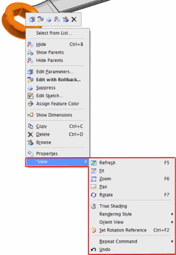

Displaying View operation commands on the shortcut menu
What is it?
You can show the View commands such as Fit, Zoom, or Pan on all the shortcut menus.
If you select the Show View Options on All Shortcut Menus check box either in the Customize dialog box or the Customer Defaults dialog box, all shortcut menus display the View menu with the commonly used View operation commands.

Where do I find it?
Customize option
|
Toolbar |
Toolbar Options arrow |
|
Menu |
Tools→Customize→Shortcut Toolbars tab |
|
Location in dialog box |
Shortcut Toolbars tab→Show View Options on All Shortcut Menus |
Customer default
|
Menu |
File→Utilities→Customer Defaults |
|
Location in dialog box |
Gateway→User Interface→General tab→Show View Options on All Shortcut Menus |